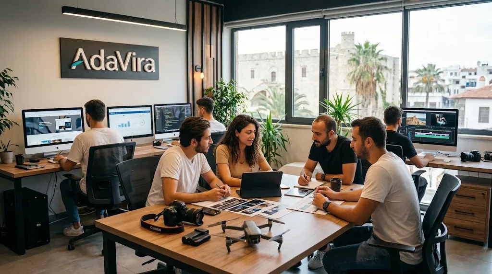

https://adavira.com/hakkimizda ·
Hakkımızda
Kuzey Kıbrıs Girne merkezli dijital ajansımız AdaVira hizmete başladı.

Girne merkezli dijital ajansımız AdaVira, işletmelerin yerel ve uluslararası pazarda yalnızca bir web adresine sahip olmasını değil, kalıcı ve kârlı bir marka yapısına dönüşmesini sağlayan stratejik bir iş ortağıdır. Dijital dönüşümün hız kazandığı günümüzde; modern web yazılımından arama motoru optimizasyonuna (SEO), performans odaklı dijital reklamcılıktan profesyonel stüdyo ve saha prodüksiyonuna kadar tüm kritik süreçleri tek bir çatı altında koordine ediyoruz.
Farklı ajanslar veya bağımsız ekipler arasında yaşanan iletişim kopukluklarını ortadan kaldırarak; doğrudan saha dinamiklerine temas eden, ölçülebilir ve sürdürülebilir pazarlama altyapıları inşa ediyoruz.
Sektör Odaklı Uzmanlık ve Entegre Çözümler
Dijital pazarlamada kalıcı başarı, her sektörün kendi müşteri alışkanlıklarını doğru analiz etmekten geçer. Bu doğrultuda iş kollarının doğrudan ihtiyaçlarına yönelik özel sistemler kurguluyoruz:
- Gayrimenkul & Yatırım: Yatırımcı ilgisini ilk saniyede yakalamak ve portföy değerini en net açıyla sunmak adına, Kıbrıs Emlak sektörü için iç/dış ve havadan Drone Çekimleri ile güçlendirilmiş, hızlı ilan ve portföy yönetim altyapıları kuruyoruz.
- Otomotiv & Araç Satışı: Güven odaklı ticaretin temelini oluşturan Oto Galeri websitesi ile kurumsallaşma süreçlerini yönetiyor; canlı stok vitrini, profesyonel araç çekimleri ve yerel arama görünürlüğü ile galerinizin prestijini dijitale taşıyoruz.
- Kişisel Bakım & Estetik: İşletme yoğunluğunu azaltırken müşteri memnuniyetini artıran Güzellik salonları yapay zeka asistan ve randevu sistemi çözümleriyle, 7/24 randevu alan ve sosyal medyadan gelen talepleri satışa çeviren otomasyonlar sunuyoruz.
- Sağlık & Medikal Çözümler: Hastaneler, tıp merkezleri, klinikler, doktorlar, psikologlar, diyetisyenler ve tüp bebek merkezleri için mevzuata uygun, güven veren kurumsal kimlik çalışmaları, online danışmanlık/randevu altyapıları ve yerel harita optimizasyonları hazırlıyoruz.
- Konaklama & Turizm: Oteller ve seyahat acenteleri için aracı komisyonlarını azaltan, doğrudan rezervasyon getiren çok dilli web platformları, tur yönetim sistemleri ve yüksek çözünürlüklü tanıtım filmleri üretiyoruz.
- E-Ticaret & Perakende: Satış hunisi (funnel) mantığıyla kurgulanmış, ödeme altyapıları eksiksiz, ürün fotoğrafçılığı ve reklam kampanyalarıyla desteklenen büyüme odaklı mağazalar geliştiriyoruz.
Bizi Farklı Kılan Yaklaşım
- Uçtan Uca Sorumluluk: Tasarım, yazılım, reklam yönetimi ve video prodüksiyonu ayrı ekiplere bölmeden, tek bir stratejik plan doğrultusunda hayata geçiriyoruz.
- Görünürlük ve Dönüşüm: Sadece estetik görünen sayfalar değil; Google aramalarında üst sıralara çıkan ve gelen ziyaretçiyi gerçek müşteriye dönüştüren teknik omurgalar kuruyoruz.
- Yerel Saha Hâkimiyeti: KKTC pazarının kendine has ticari dinamiklerini yakından tanıyor, global pazarlama standartlarını adanın yerel gerçekleriyle harmanlıyoruz.
Misyonumuz
İşletmelerin potansiyelini doğru analiz ederek; güçlü yazılım, hedef odaklı dijital reklamcılık ve yaratıcı prodüksiyon desteğiyle onları dijital dünyada istikrarlı ve kârlı bir büyüme çizgisine taşımak.
Vizyonumuz
Kuzey Kıbrıs başta olmak üzere bölgedeki işletmelerin dijital dönüşüm süreçlerinde en yetkin, güvenilir ve ilk akla gelen çözüm ortağı olmak.